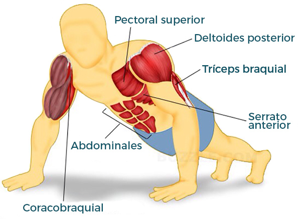

Home
Sentadillas goblet 10 repeticiones
Burpees 10 repeticiones
Mountain climber 10 repeticione
10 Sentadillas
siete Abdominales en bicicleta
cinco Flexiones (con rodillas apoyadas si no podemos hacerlas completas)
